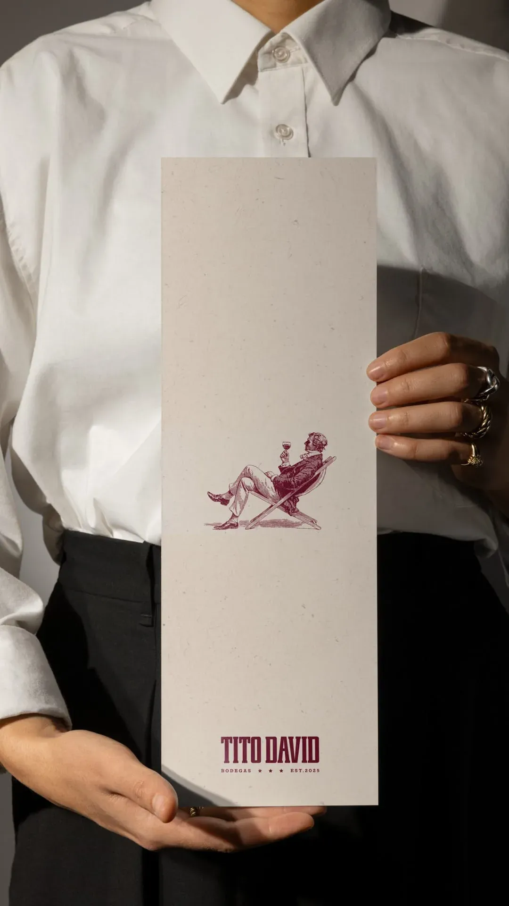
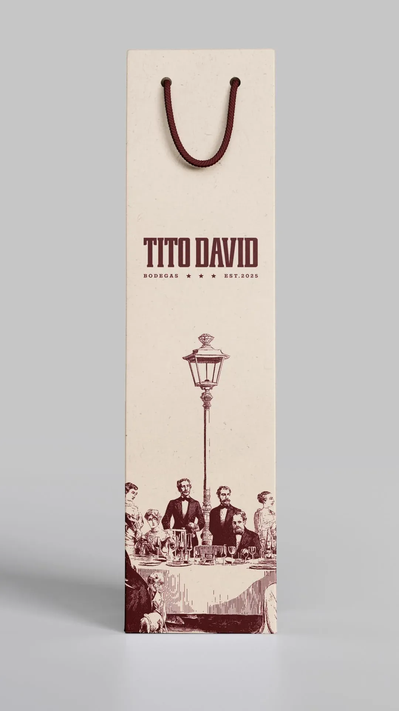
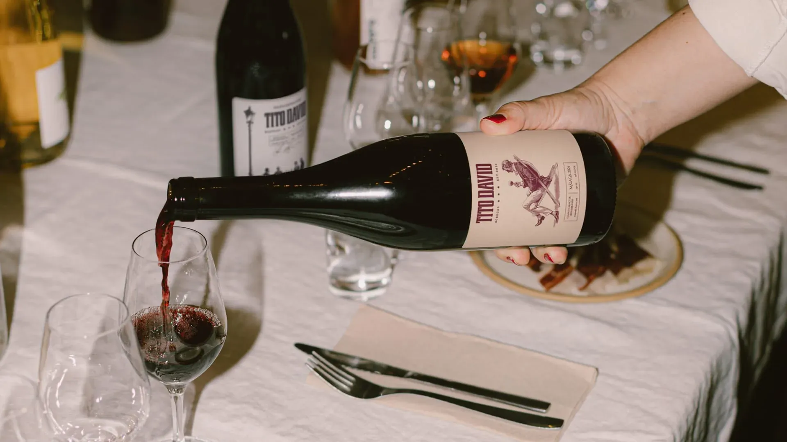
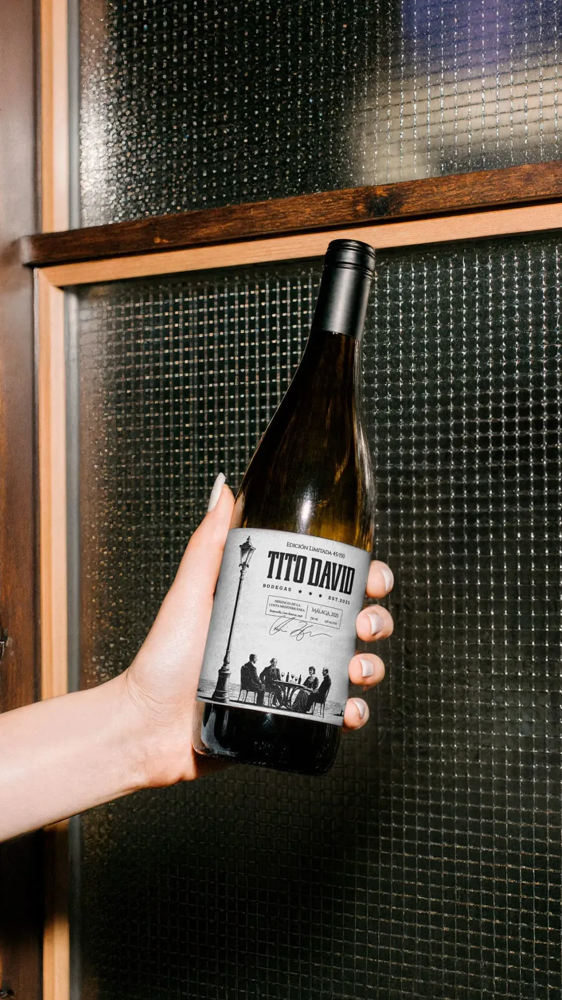
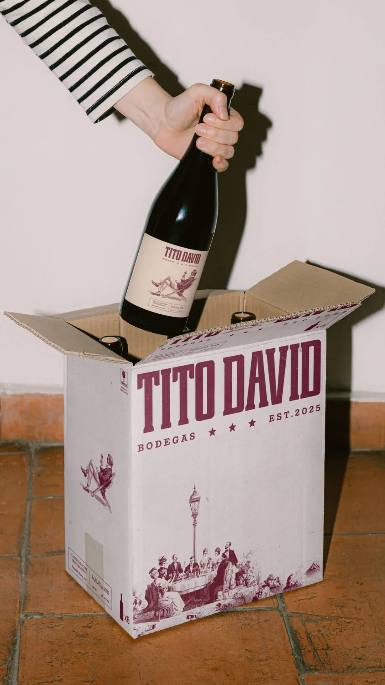
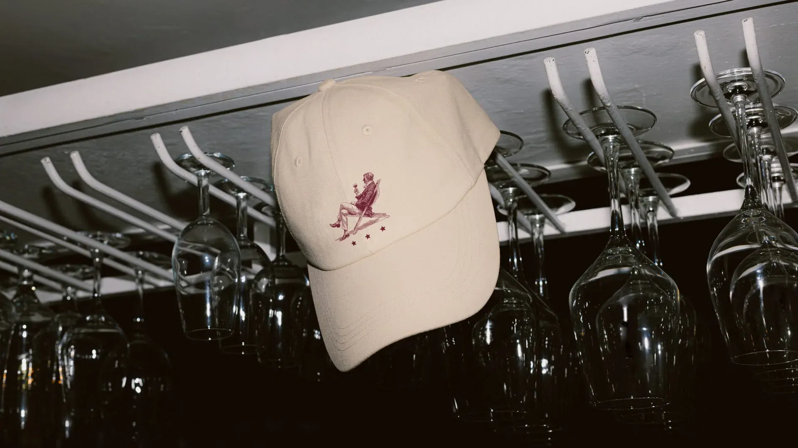

Tito David
Tito David nace como un ejercicio de identidad que va más allá del packaging y se convierte
en
construcción de marca con intención. El objetivo no era diseñar una etiqueta atractiva, sino
crear un universo visual coherente capaz de transmitir tradición, carácter y una experiencia
emocional ligada al vino. Desde el inicio entendí que la marca debía sentirse auténtica, con
peso, con historia, pero sin caer en lo predecible.
La propuesta se construye sobre un lenguaje visual elegante y atemporal, donde la
tipografía, la
paleta cromática y la composición trabajan en equilibrio para proyectar sofisticación sin
excesos. Los tonos burdeos y beige no son una elección estética arbitraria, sino una
decisión
estratégica que conecta directamente con la cultura del vino y su imaginario clásico,
reinterpretado desde una mirada contemporánea. La etiqueta, pieza central del proyecto,
introduce una ilustración que humaniza la marca y aporta narrativa. No es solo una botella,
es
una escena, una actitud, una forma de entender el momento.
El desarrollo no se limita al envase. La identidad se expande a distintos soportes y
aplicaciones para garantizar consistencia en todos los puntos de contacto. Desde la
ambientación hasta el merchandising, cada elemento responde al mismo sistema visual,
reforzando
reconocimiento y posicionamiento. El proyecto demuestra la importancia de pensar la marca
como
un todo y no como piezas aisladas.
Tito David Bodegas representa mi capacidad para construir identidades sólidas, estratégicas
y
emocionalmente conectadas. Diseño con intención, no con adornos. Creo sistemas visuales que
sostienen una marca en el tiempo y que transmiten algo más profundo que una estética bonita.
Porque cuando el diseño tiene estructura y alma, la marca no solo se ve profesional, se
siente
real.






